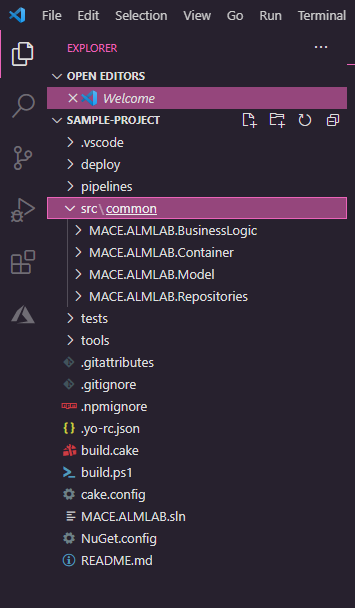
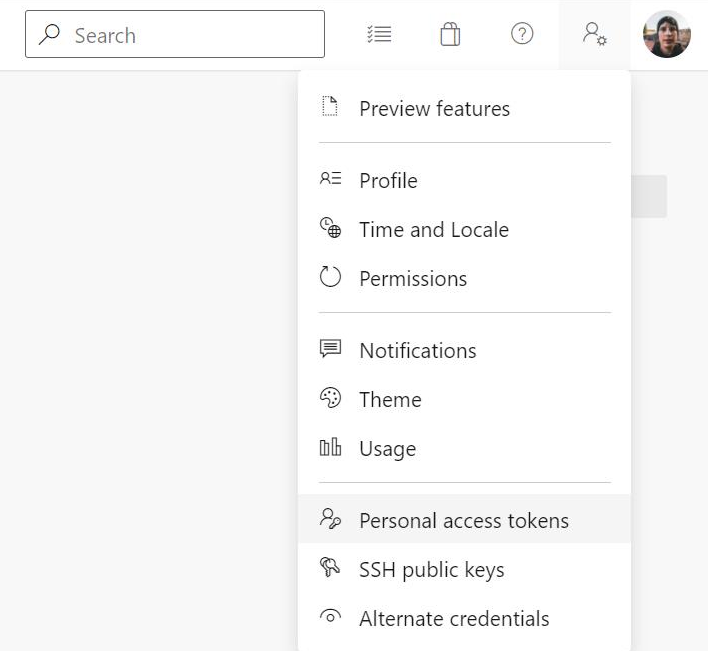

What you will build
In this tutorial, you will generate a set of files files for a new project based on a standardised template that will :
- Generates a set of structured files that hold the base configuration for a new project which is uploaded (pushed) to a new repository in Azure DevOps
- Create pipelines which builds, validates and deploys code to specified environments
- Can also generate additional files during the project lifecycle as the solution grows
- Generate project itself - CMD
- Generating a solution storage place
- Install as unmanaged in Master environment
- Install that solution as managed into the ‘build' environment
- Using the ADO generator to create the pipelines etc - inputs and outputs
- Setup branch policies and repo permissions
To achieve this, you'll use our internal tool, Project Generator.
Prerequisites
- Ensure you have access to our MACE team in Github
- Download the LTS version of NPM from this link
- Install VS Code
- Open the NodeJS website
- Download the latest LTS version
- Run the downloaded installer
First you will need to create a new directory in windows explorer where will install all our project files in this lab. Call the folder alm-labs for the purpose of this lab.
Open CMD within your newly created folder by typing CMD in Windows explorer and press Enter
A new command prompt window should open with the path pointing to your newly created folder. 
All commands throughout the lab will be entered in Command prompt
Clone the PowerApps project template Github repository to your local machine by running git clone https://github.com/Capgemini/powerapps-project-template.git
When prompted to sign into Github, please sign in.
If successful, the output should be as illustrated below
Cloning into 'powerapps-project-template'...
remote: Enumerating objects: 1253, done.
remote: Counting objects: 100% (1253/1253), done.
remote: Compressing objects: 100% (622/622), done.
Rremote: Total 1253 (delta 532), reused 1204 (delta 487), pack-reused 0eceiving 1228/125
Receiving objects: 100% (1253/1253), 538.01 KiB | 3.18 MiB/s, done.
Resolving deltas: 100% (532/532), done.
Updating files: 100% (165/165), done.
In command prompt change directory into the project folder you created in the Clone tool step of this lab by entering cd powerapps-project-template
Install Yomen with the command npm install yo -g
First we need the project dependencies, to get these run npm install
Now we're going to build powerapps-project-template tool by running npm run build
Finally run npm link to install the local package as a global tool, to be used in the next step
You may see a few warnings when running the above commands but these can be ignored.
Stay in command prompt but go back to the directory alm-labs using cd ../
Create a new directory where we will be storing our generated files mkdir sample-project and change directory into the newly created project folder using cd sample-project
Now we are going to generate the base file structure for our project by running yo @capgemini/cdspackage
It may take a few seconds for you to be prompted, but eventually you will be prompted for several inputs:
Input | Purpose | Example |
Name of the client? | Used within naming files and folders produced by the generator | MACE |
Name of the package? | Used creating files, folders and PowerApps solutions | ALMLAB |
Open the generated project in either VS Code or the file explorer and take this opportunity to browse through the files seeing what was created and how the values you've entered have been passed into the naming of files and folders.
To open your project in VS Code from command prompt run code .

Now we are going to generate our solution structure by running yo @capgemini/cdspackage:solution You will again be prompted for several inputs:
Used within naming files and folders produced by the generator, entered in the above **Generate solution** step. The command prompt will recognise your previously entered value and suggest the value which you can accept as a default by pressing enter
Input | Purpose | Example |
Publisher prefix? | Used to prefix components in PowerApps and is mapped to the solution prefix | MACE |
Name of the client? | MACE | |
Name of the package? | Used creating files, folders and PowerApps solutions, entered in the above **Generate solution** step. The command prompt will recognise your previously entered value and suggest the value which you can accept as a default by pressing enter | ALMLAB |
Name of the solution? | Used to create the name of your solution in PowerApps | Sample |
Development environment URL? | Stored within the repository to be used for local extractions of solutions and config e.g. code generation. **Be sure to prefix URL with https://** | _Paste the Development environment URL from notepad which we copied earlier in the lab_ |
Are changes to this promoted using a staging environment? | Y | |
Staging environment URL? | Used for extracting the solution locally or in the generated pipeline **Be sure to prefix URL with https://** | _Paste the Master environment URL from notepad which we copied earlier in the lab_ |
You will then be prompted to overwrite the following files:
- tasks.json
Writing solution configuration...
Updating tasks.json...
Updating import config to include new solution.
create src\solutions\{{prefix}}_{{Package}}_{{Solution}}\MappingFile.xml
create src\solutions\{{prefix}}_{{Package}}_{{Solution}}\spkl.json
create src\solutions\{{prefix}}_{{Package}}_{{Solution}}\solution.json
conflict .vscode\tasks.json
? Overwrite .vscode\tasks.json? (ynaxdH)
Enteryand press Enter - ImportConfig.xml
force .vscode\tasks.json
conflict deploy\PkgFolder\ImportConfig.xml
? Overwrite deploy\PkgFolder\ImportConfig.xml? (ynaxdH)
Enteryand press Enter
First, you need to create a Personal Access Token (PAT) so that the generator can talk to Azure DevOps on behalf of your account.
Open Azure DevOps, select User settings (user icon with a little cog) and select Personal access tokens

Select + New Token then enter ‘Generator' as the name, select an expiry date of today or tomorrow, and for scopes select Full Access.


Copy the token to notepad as you'll need this later.
If Package Name and Azure DevOps Project name are the same then the generator will fail. In this case, rename the pre-created repo in Azure Devops by: 1. Go to the Project Settings 2. Under Repos, select Repositories 3. For the repo with the same name, use the three dots to rename the repo to '[existing name]_old'
Now you are going to set up Azure DevOps by running yo @capgemini/cdspackage:azuredevops. You'll be asked the following questions:
Input | Purpose | Example |
Azure DevOps URL? | The URL of the Azure DevOps Organisation | https://dev.azure.com/cap-alm-lab |
Azure DevOps Auth Token (managed)? | Paste in the PAC token generated before | *** |
Azure DevOps project? | Select your project from the dropdown options | ALMLab |
Name of the client? | Used within naming files and folders produced by the generator | MACE |
Name of the package? | Used creating files, folders and PowerApps solutions, entered in the above **Generate solution** step. The command prompt will recognise your previously entered value and suggest the value which you can accept as a default by pressing enter | ALMLAB |
CI Environment URL? | The URL of the CI environment used for the solution checker and deploying to CI environment | https://[???].crm11.dynamics.com |
Service Account Email? | The email address to use for the UI automation tests and running the extract pipeline. This user needs access to the 3 Power Platform Environments | If you don't have a service account, you can use your own for now and update these details later. |
Service Account Password? | Used in conjunction with the Service Account Username. | |
enant ID? | Used for creating the Service Connection in Azure DevOps which is used for the solution checker and deploying to CI environment | _Paste value from notepad which copied earlier in the lab_ |
Application ID? | Used in conjunction with Tenent ID | _Paste value from notepad which copied earlier in the lab_ |
Client Secret? | Used in conjunction with Tenent ID | _Paste value from notepad which copied earlier in the lab_ |
If the generation was successful, the output should look like this:
Setting up Azure DevOps...
Generating variable groups...
Creating Package - ALMLAB variable group...
Creating Integration Tests - ALMLAB variable group...
Creating Cake - ALMLAB variable group...
Generating repository...
Creating almlab repository...
Pushing initial commit to https://cap-alm-lab@dev.azure.com/cap-alm-lab/ALMLab/_git/almlab
Generating builds definitions...
Found 2 YAML builds.
Creating pipelines/azure-pipelines-dynamics-365-extract.yml build...
Creating pipelines/azure-pipelines.yml build...
Extension: PowerPlatform-BuildTools is already installed.
Extension: sarif-viewer-build-tab is already installed.
Generating service connections...
Generating release definition...
Creating ALMLAB release...
Finished setting up Azure DevOps.
Done.
Within Azure DevOps navigation to ‘Project Settings' then under ‘Repos', select ‘Repositories'.
Now select your repository called the package name you gave and click on the ‘Policies' tab. Under ‘Branch Policy' select ‘master'.

Configure the settings as pictured below: